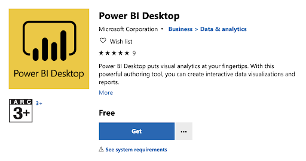

Introduction to Power BI
Setup

These are the course notes for the “Introduction to Power BI” course given by the Monash Bioinformatics Platform for the Monash Data Fluency initiative. Our teaching style is based on the style of The Carpentries.
During this workshop we will be using Power BI Desktop installed on your computer. There are several ways to download Power BI Desktop, depending on which system you use.
1. Windows
- Windows Store
The first option is to visit Windows Store to get the Power BI Desktop app and install it. Note that the system requirements is Windows 10 version 14393.0 or higher.

If you are using a Monash machine, try searching “Power BI” in “Software Center” and install it. For questions concerning installation on a Monash machine, you may contact eSolutions for help.

- Power BI website
You can also download Power BI Desktop from the Power BI website and install it as an application on your computer.

- Power BI service
Or if you prefer Power BI Service, you can get it by clicking the “Download” button in the upper right and selecting “Power BI Desktop”. To use Power BI service, you may need to sign in your Microsoft account.

After the setup process, you will be able to see the following Start Screen.

2. MacOS
Power BI Desktop is not available on Macs. However, you can run a Windows session on your Mac via BootCamp or using a similar application.
3. Linux
Currently it is not possible to install Power BI desktop on Linux. You can choose to install it on a Windows Virtual Machine like VirtualBox or using a similar application.
After installing Power BI Desktop, you can sign up for Power BI using your Monash account here. By signing in the Power BI Desktop, you will be able to save your work and later publish it to the Power BI service.
Data
Download the data file gap-minder.csv for the course.
Authors and copyright
This course is developed for the Monash Data Fluency Team.

This work is licensed under a CC BY-4: Creative Commons Attribution 4.0 International License. The attribution is “Monash Bioinformatics Platform” if copying or modifying these notes.
Data files are derived from Gapminder, which has a CC BY-4 license. The attribution is “Free data from www.gapminder.org”. Refer to the Gapminder site for the original form of the data if using it for other uses.